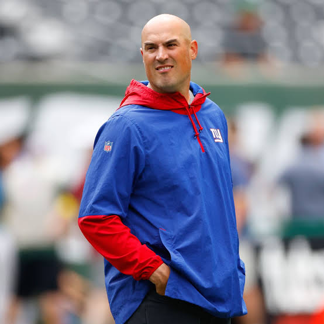
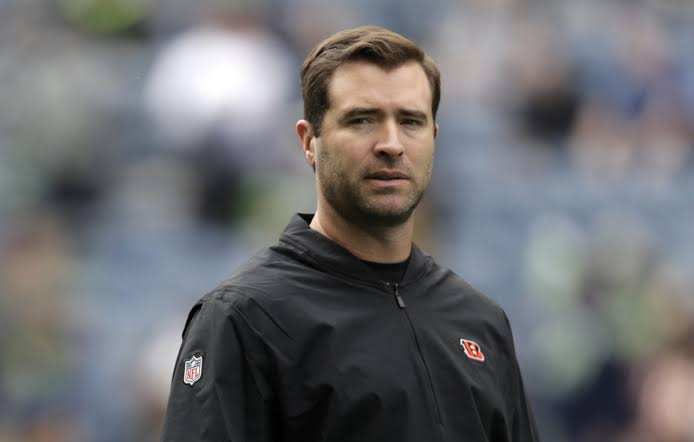
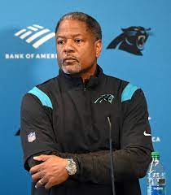

Potential Head Coaches
Here are my 5 favortie potential head coaching canidates for the Carolina Panthers.
5. Giants OC Mike Kafka:
Kafka is the Giants Offensive Coordinator and he is doing a really good job in New York with his starting QB Daniel Jones, tearing his ACL, and making Tommy DeVeito a fan favorite in New York. But before New York, he had a strong reputation as a QB tutor to Patrick Mahomes during his rookie year. I hope he can come to Carolina and make Bryce Young a top tier QB like Mahomes one day and get this horrific Panthers offense back on track.

4. Bengals OC Brian Callahan:
Callahan is the Bengals Offensive Coordinator brought into this coaching staff by Zac Taylor in 2019 and made Joe Burrow the highest paid QB in NFL history and hopefully he can do the same with Bryce Young. He was a former UCLA walk-on QB and the son of NFL coaching legend Bill Callahan, he is a more qualified head coach candidate for this team and made the Bengals go from dead last in 2019 to the Superbowl two years later.

3. 49ers DC Steve Wilks:
Wilks was the interim head coach last year when he took over for the recently fired Matt Rhule at the time, and he was loved by the players. It sucks because he turned this team around way better than Frank Reich could ever dream of. He is currently the 49ers Defensive Coordinator and with our defense who isn't as bad as other people think, could make this defense a top 5 unit in the future with young talents like Jaycee Horn, Brian Burns, Derrick Brown, and Frankie Luvu. Do I want this to happen? Yes. Do I think he wants to come back? Probably not. But either way the players would love for him to come back and be the head coach for this team.

2. Lions OC Ben Johnson:
Ben Johnson is the Offensive Coordinator for the Detroit Lions and he was actually interviewed last year but he rejected a second interview for the position and went back to Detroit. But now a main contributor of the Lions being a playoff team, he should be David Tepper's number one target for this position. I think on how smart Johnson is, he can single handedly fix this team's poor offensive production and make this Panthers team back to the playoffs.
1. Commanders OC Eric Bieniemy:
My number one candidate for this position is a no-brainer in Washington Commanders Offensive Coordinator Eric Bieniemy. What he did with winning a Superbowl twice in Kansas City and making Sam Howell a franchise QB in Washington is the perfect candidate for this position. He will work with Bryce and fix his rookie bad habits and this offense as well. Sam Howell as of right now is top 5 in passing yards in the entire league in front of guys like Patrick Mahomes and Josh Allen. Imagine the production from Bryce behind the mind and play calling from Eric Bieniemy. If he does end up getting hired, I expect this team to be a playoff team within the next couple of years.